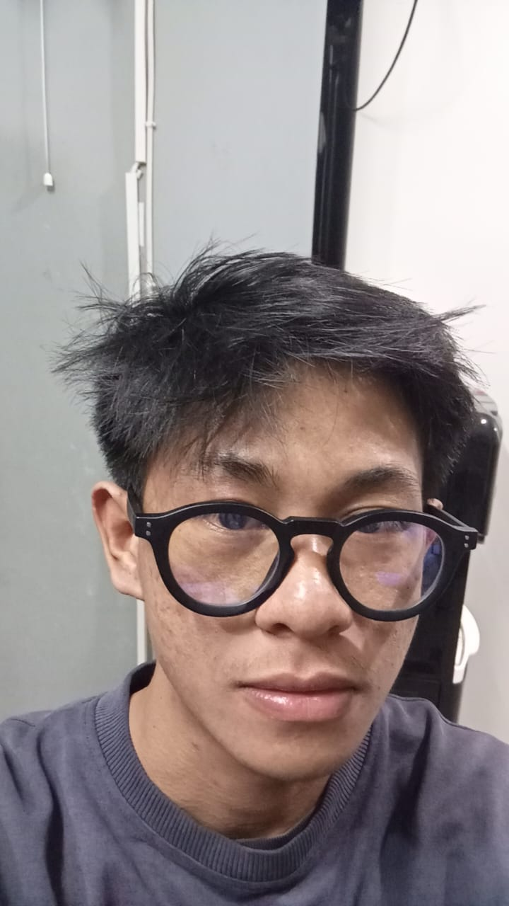

My name is Revolino, i was born in Bandung 16 July 2004. i have experience working as a content creator on Car Showroom. for now i working in F&B as an Adminstrative Sales Opration on PT Citarasa Kuliner (Cimol Bojot AA).
i Have Basic skills for make some scipt for kontent on Social media, Editing Video, Graphic design and of course because im working as an admin i have basic skill for adminisrative things.
I have worked closely with supervisors and teams to manage daily operations, analyze sales performance, and create content strategies that support business growth.